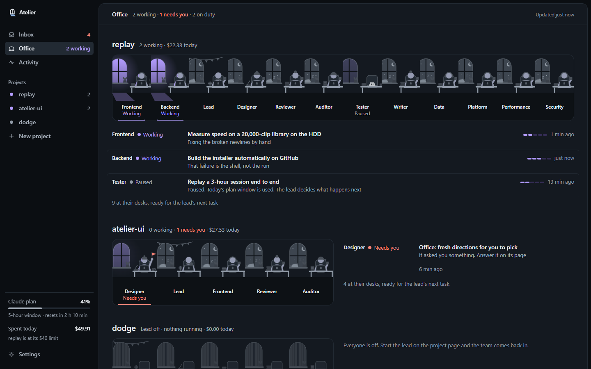
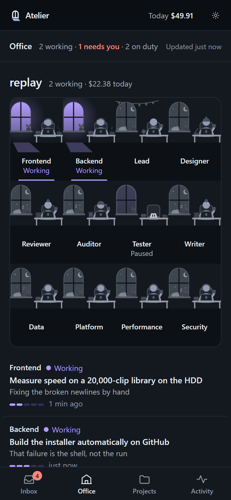
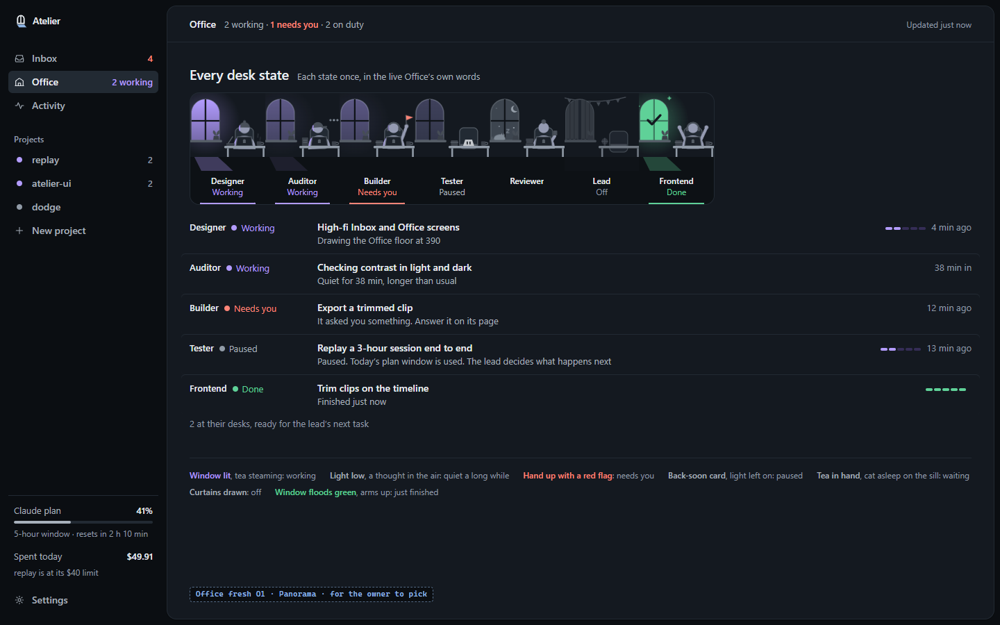
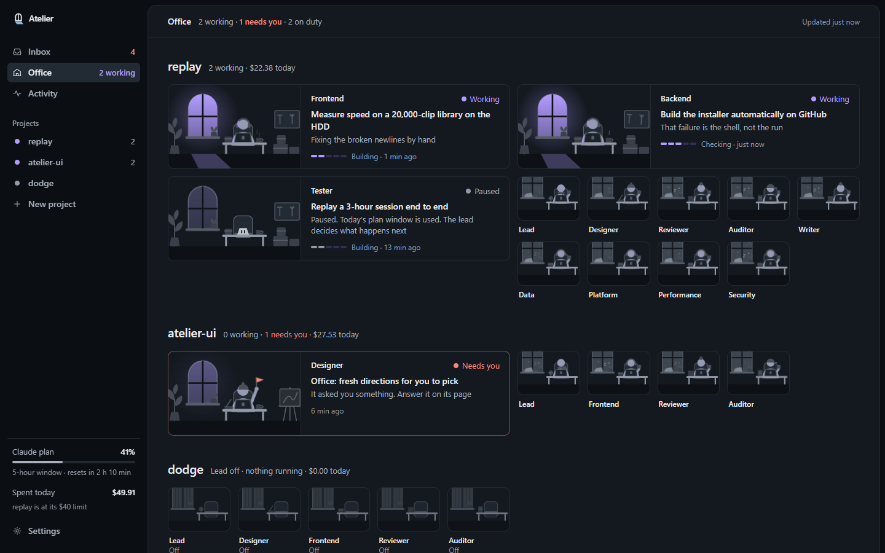
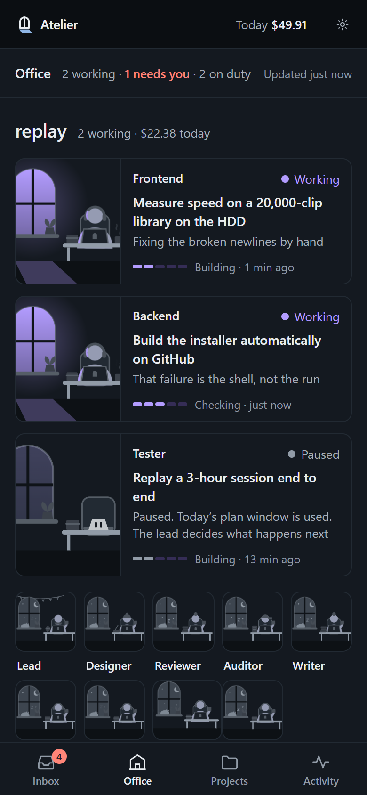
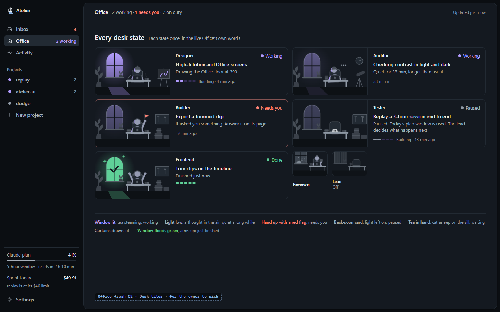
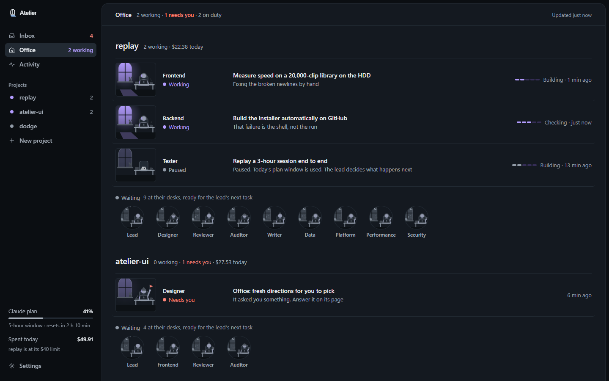
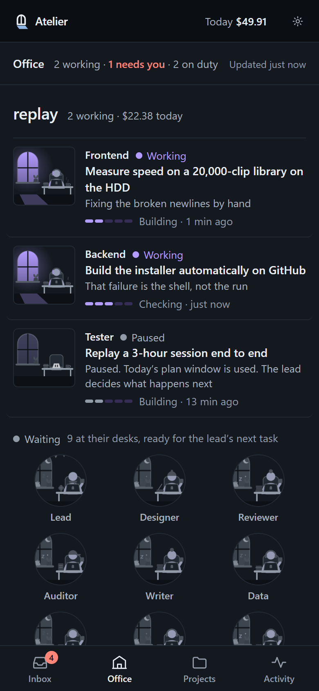
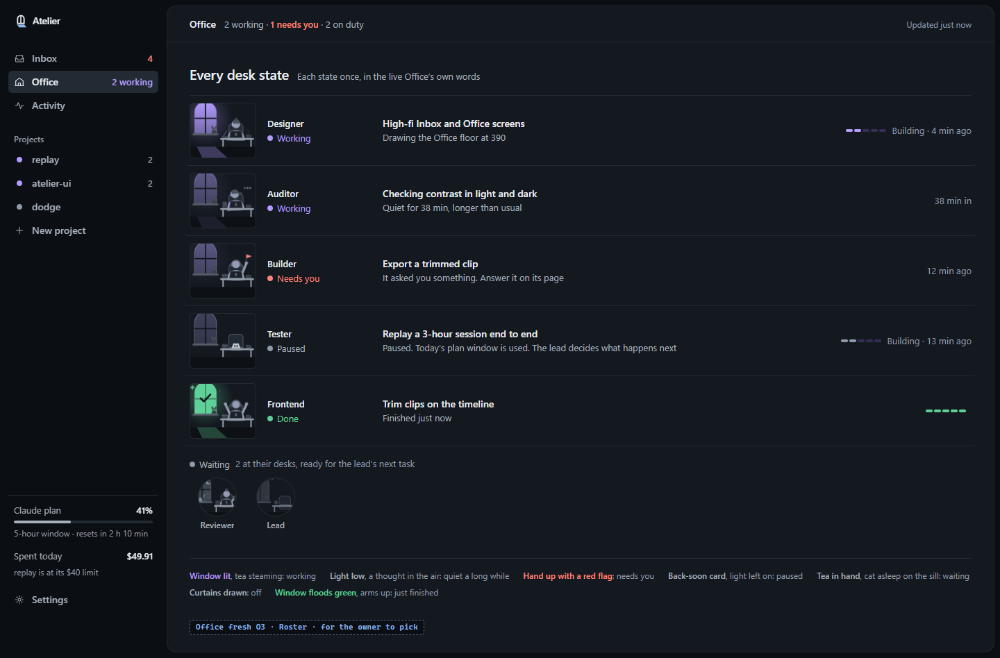

O1 · the picture first
Panorama
Feel: each project is one room, every desk a bay of the same size side by side, so you count the lit windows before you read anything. Under the room, one line each for the desks with news, and one quiet line for the rest (“8 at their desks, ready for the lead’s next task”). A small team puts its words beside the room, so no floor leaves half the page empty. On the phone the room wraps 4 to a row.
To build: light. One desk drawing at one size per floor, a list of lines below; no second tile size to balance.





Open it live, with the demoEvery stateLight modeReduced motionWatch the 13 s recordingOn a phoneFrame by frame

O2 · the tile first
Desk tiles
Feel: each desk with news gets a tile showing its whole corner (window, desk, the role’s furniture) beside its task and latest step. Everyone else sits on a shelf of small picture tiles exactly half a work tile high, so the two sizes share one rhythm. When the work tiles end on an odd one, the shelf fills the empty cell beside it. The most character of the three, and the most height on a phone.
To build: medium. Two tile sizes from one drawing, and the odd-tile rule for the shelf.





Open it live, with the demoEvery stateLight modeReduced motionWatch the 13 s recordingOn a phoneFrame by frame

O3 · the words first
Roster
Feel: calm rows like a Linear list, one per desk with news: a small framed scene, role and state, the task and its latest step, the stage and time in one column you scan down. Everyone at rest sits on a bench of round portraits underneath, each with a slice of their window, so the team is still there as little people. The densest and quietest of the three.
To build: light. A list row and a round crop of the same drawing.





Open it live, with the demoEvery stateLight modeReduced motionWatch the 13 s recordingOn a phoneFrame by frame

My pick: O1 Panorama
O1 fixes the imbalance at its root: every desk is the same size, so there is no big card next to an empty gap and no row of thin strips, on the desk or the phone. It keeps what you liked about today’s Office (people at desks, the window glowing while they work) and adds the Townscaper feel of a row of lights you count at a glance, with words only where there is news. O2 is a close second if you want more of each desk’s character on screen and don’t mind a longer phone page; O3 is the one to choose if you mostly want a calm list.